Spring Cloud之Netflix Zuul服务网关
1. 什么是服务网关?
API Gateway（API GW / API 网关），顾名思义，是出现在系统边界上的一个面向 API 的、串行集中式的强管控服务，这里的边界是企业 IT 系统的边界，主要起到隔离外部访问与内部系统的作用。在微服务概念的流行之前，API 网关的实体就已经诞生了，例如银行、证券等领域常见的前置机系统，它也是解决访问认证、报文转换、访问统计等问题的。
API 网关的流行，源于近几年来，移动应用与企业间互联需求的兴起。移动应用、企业互联，使得后台服务支持的对象，从以前单一的 Web 应用，扩展到多种使用场景，且每种使用场景对后台服务的要求都不尽相同。这不仅增加了后台服务的响应量，还增加了后台服务的复杂性。随着微服务架构概念的提出，API 网关成为了微服务架构的一个标配组件。
API 网关是一个服务器，是系统对外的唯一入口。API 网关封装了系统内部架构，为每个客户端提供定制的 API。所有的客户端和消费端都通过统一的网关接入微服务，在网关层处理所有非业务功能。API 网关并不是微服务场景中必须的组件，如下图，不管有没有 API 网关，后端微服务都可以通过 API 很好地支持客户端的访问。
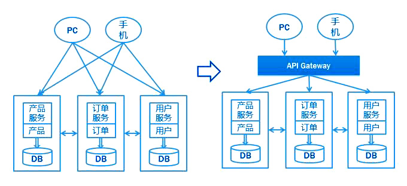
但对于服务数量众多、复杂度比较高、规模比较大的业务来说，引入 API 网关也有一系列的好处：
- 聚合接口使得服务对调用者透明，客户端与后端的耦合度降低
- 聚合后台服务，节省流量，提高性能，提升用户体验
- 提供安全、流控、过滤、缓存、计费、监控等 API 管理功能
2. 为什么要使用服务网关？
- 单体应用：浏览器发起请求，请求直接打到单体应用所在的机器上，应用从数据库查询数据原路返回给浏览器，对于单体应用来说，它只有一个，不需要网关。
- 微服务：微服务的应用可能部署在不同机房，不同地区，不同域名下。此时客户端（浏览器/手机/软件工具）想要请求对应的服务，都需要知道机器的具体的IP或者域名URL，当微服务实例众多时，这是难以记忆的。此时就有了网关，客户端相关的请求直接发送到网关，由网关根据请求标识解析判断出具体的微服务ip，再把请求转发到微服务实例。这其中的记忆功能就全部交由网关来操作了。
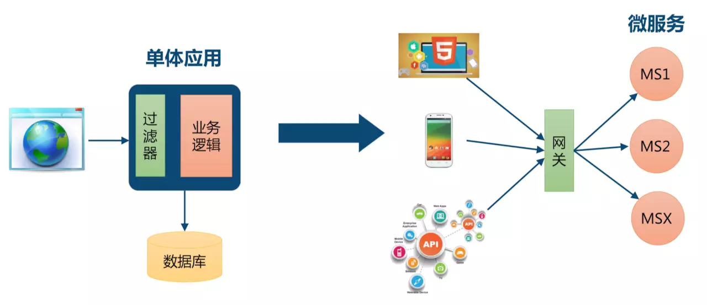
总结
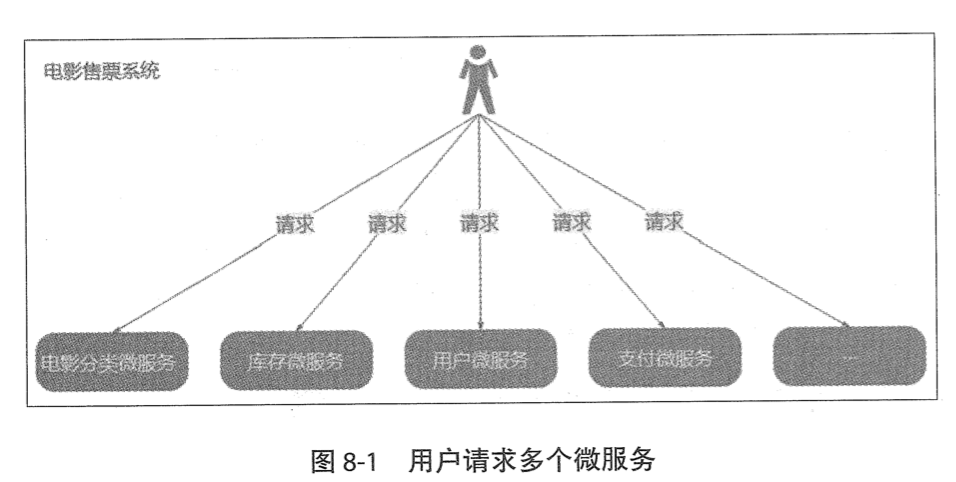
如果让客户端直接与各个微服务交互：
- 客户端会多次请求不同的微服务，增加了客户端的复杂性
- 存在跨域请求，在一定场景下处理相对复杂
- 身份认证问题，每个微服务需要独立身份认证
- 难以重构，随着项目的迭代，可能需要重新划分微服务
- 某些微服务可能使用了防火墙/浏览器不友好的协议，直接访问会有一定的困难
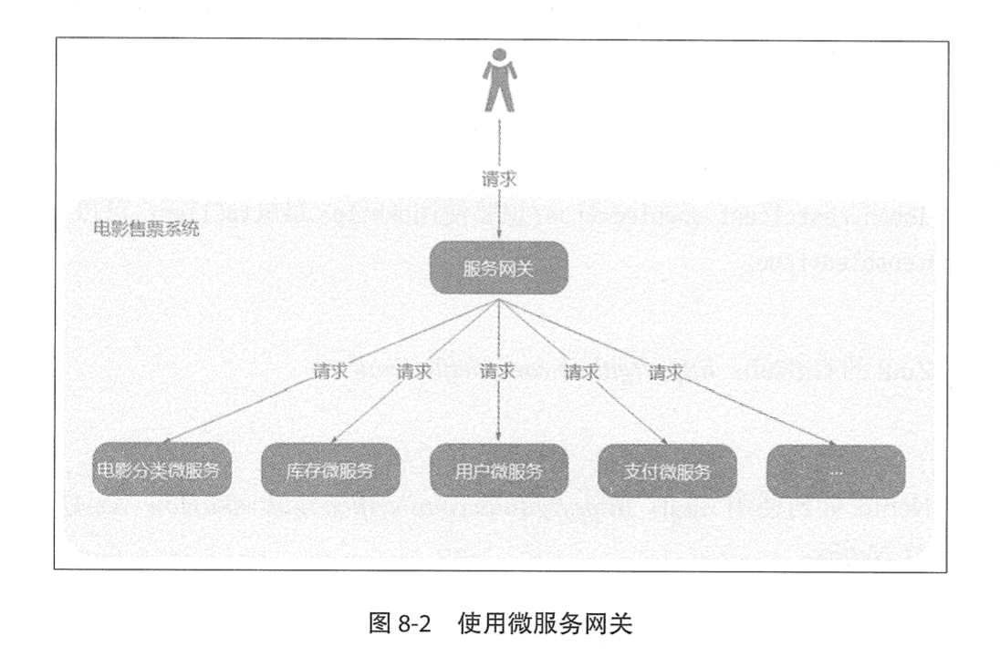
因此，我们需要网关介于客户端与服务器之间的中间层，所有外部请求率先经过微服务网关，客户端只需要与网关交互，只需要知道网关地址即可。这样便简化了开发且有以下优点：
- 易于监控，可在微服务网关收集监控数据并将其推送到外部系统进行分析
- 易于认证，可在微服务网关上进行认证，然后再将请求转发到后端的微服务，从而无需在每个微服务中进行认证
- 减少了客户端与各个微服务之间的交互次数
3. 服务网关解决了什么问题？
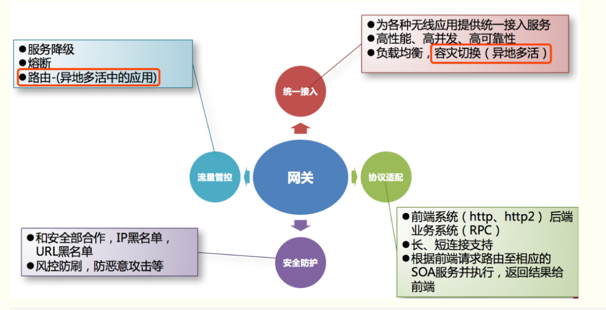
网关具有身份认证与安全、审查与监控、动态路由、负载均衡、缓存、请求分片与管理、静态响应处理等功能。当然最主要的职责还是与“外界联系”。
总结一下，网关应当具备以下功能： - 性能：API 高可用，负载均衡，容错机制。
- 安全：权限身份认证、脱敏，流量清洗，后端签名（保证全链路可信调用），黑名单（非法调用的限制）。
- 日志：日志记录，一旦涉及分布式，全链路跟踪必不可少。
- 缓存：数据缓存。
- 监控：记录请求响应数据，API 耗时分析，性能监控。
- 限流：流量控制，错峰流控，可以定义多种限流规则。
- 灰度：线上灰度部署，可以减小风险。
- 路由：动态路由规则。
4. 常用网关解决方案
4.1 Nginx + Lua
Nginx Zuul 开发语言 C Java 负载均衡 采用服务器实现负载均衡 采Eureka + Ribbon来实现本地负载均衡 适用范围 适合服务器端负载均衡 适合做门户网关，作为整个全局的网关 适合微服务中实现网关 属于业务网关，主要用来对应不同的客户端提供服务，用户聚合业务 区别 – 可以实现熔断，重试等功能 其他语言整合 可以整合一些脚本语言（Nginx + Lua） – 服务器本质 高性能的HTTP和反向代理服务器，也是一个IMAP/POP3/SMIP服务器 开源的API Gateway服务器，本质上是一个Servlet应用，提供动态路由，监控，弹性，安全等边缘服务的框架 ### 4.2 Kong Kong 是 Mashape 提供的一款 API 管理软件，它本身是基于 Ngnix + Lua 的，但比 Nginx 提供了更简单的配置方式，数据采用了 ApacheCassandra/PostgreSQL 存储，并且提供了一些优秀的插件，比如验证，日志，调用频次限制等。Kong 非常诱人的地方就是提供了大量的插件来扩展应用，通过设置不同的插件可以为服务提供各种增强的功能。 优点：基于 Nginx 所以在性能和稳定性上都没有问题。Kong 作为一款商业软件，在 Nginx 上做了很扩展工作，而且还有很多付费的商业插件。Kong 本身也有付费的企业版，其中包括技术支持、使用培训服务以及 API 分析插件。
缺点：如果你使用 Spring Cloud，Kong 如何结合目前已有的服务治理体系？
kong开源文档4.3 Traefik
Traefik 是一个开源的 GO 语言开发的为了让部署微服务更加便捷而诞生的现代HTTP反向代理、负载均衡工具。 它支持多种后台 (Docker, Swarm, Kubernetes, Marathon, Mesos, Consul, Etcd, Zookeeper, BoltDB, Rest API, file…) 来自动化、动态的应用它的配置文件设置。Traefik 拥有一个基于 AngularJS 编写的简单网站界面，支持 Rest API，配置文件热更新，无需重启进程。高可用集群模式等。相对 Spring Cloud 和 Kubernetes 而言，目前比较适合 Kubernetes。
4.4 Spring Cloud Netflix Zuul
Zuul 是从设备和网站到 Netflix 流媒体应用程序后端的所有请求的前门。Zuul 作为边缘服务应用程序，旨在实现动态路由、监控、弹性和安全性。虽然可以通过自定义 Filter 实现我们想要的功能，但是由于 Zuul 本身的设计是基于单线程的接收请求和转发处理，是阻塞 IO，不支持长连接。目前来看 Zuul 就显得很鸡肋，随着 Zuul 2.x 一直跳票（2019 年 5 月发布了 Zuul 2.0 版本），Spring Cloud 推出自己的 Spring Cloud Gateway。
- Zuul 1.0架构图
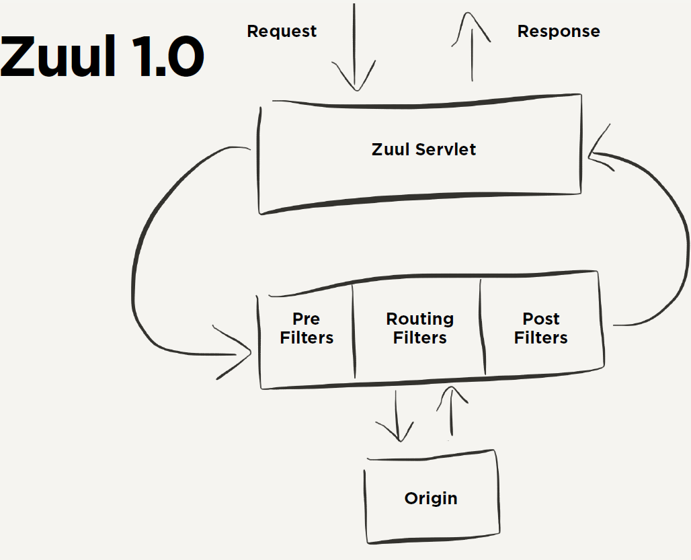 - Zuul 2.0架构图
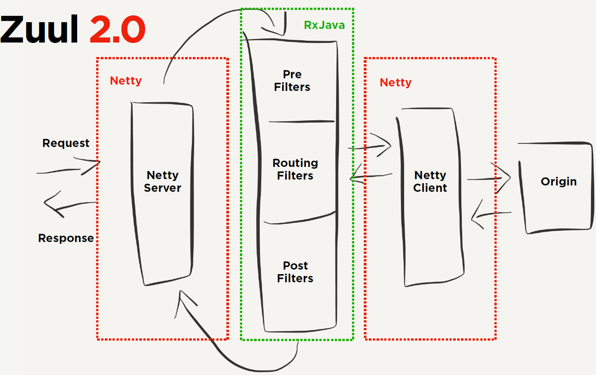4.5 Spring Cloud Gateway
Spring Cloud Gateway 是基于 Spring 生态系统之上构建的 API 网关，包括：Spring 5，Spring Boot 2 和 Project Reactor。Spring Cloud Gateway 旨在提供一种简单而有效的方法来路由到 API，并为它们提供跨领域的关注点，例如：安全性，监视/指标，限流等。由于 Spring 5.0 支持 Netty，Http2，而 Spring Boot 2.0 支持 Spring 5.0，因此 Spring Cloud Gateway 支持 Netty 和 Http2 顺理成章。总结
API 网关在微服务架构中的一个作用图：
目前所学习的网关关注的就是 Aggr API Gateway 这部分，在这里做聚合服务的操作。5. 环境准备
- 注册中心
spring-cloud-demo-eureka-server01
spring-cloud-demo-eureka-server02 - 生产者服务
spring-cloud-demo-service-provider01提供了根据主键查询商品接口 http://localhost:7071/product/{id} - 消费者服务
spring-cloud-demo-feign-consumer提供了根据主键查询订单接口 http://localhost:9091/order/get/{id}6. 使用Nginx实现网关

6.1 下载nginx
下载nginx(根据自己的需要下载对应的版本，这里下载Windows版本)6.2 安装nginx
解压文件后直接运行根路径下的nginx.exe文件即可。
Nginx 默认端口为 80，访问：http://localhost:80/ 看到下图说明安装成功。
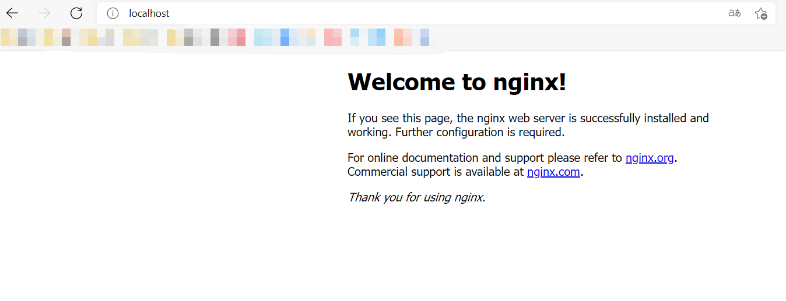6.3 配置路由规则
进入 Nginx 的 conf 目录，打开nginx.conf文件，配置路由规则：1
2
3
4
5
6
7
8
9
10
11
12
13
14
15
16
17
18
19
20
21
22
23
24
25
26
27
28
29
30
31
32......
http {
......
server {
listen 80;
server_name localhost;
#charset koi8-r;
#access_log logs/host.access.log main;
location / {
root html;
index index.html index.htm;
}
# 路由到商品服务
location /api-product {
proxy_pass http://localhost:7071/;
}
# 路由到订单服务
location /api-order {
proxy_pass http://localhost:9091/;
}
......
}
6.4 访问测试
之前我们如果要访问服务，必须由客户端指定具体服务地址访问，现在统一访问 Nginx，由 Nginx 实现网关功能将请求路由至具体的服务。
访问 http://localhost/api-order/order/get/1, 结果如下：
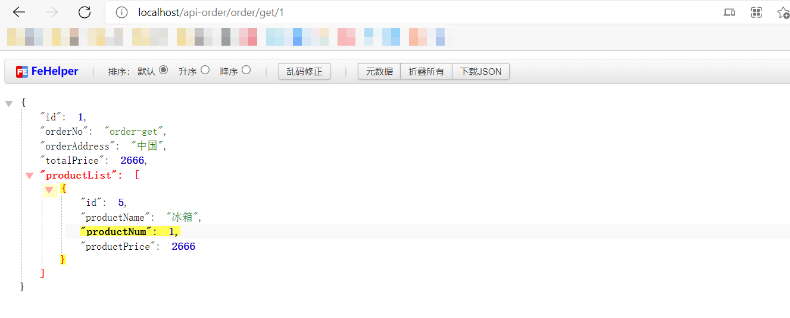
访问 http://localhost/api-product/product/1, 结果如下：
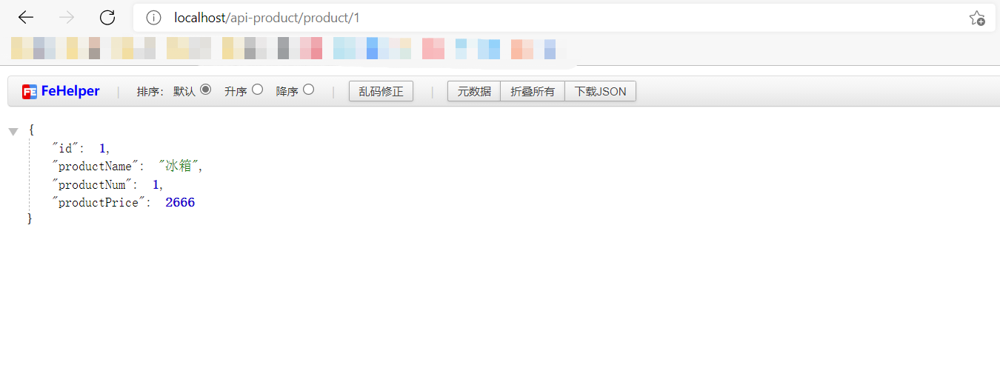
7. 使用Zuul实现网关
7.1 什么是Zuul
Zuul 是从设备和网站到应用程序后端的所有请求的前门。作为边缘服务应用程序，Zuul 旨在实现动态路由，监视，弹性和安全性。Zuul 包含了对请求的路由和过滤两个最主要的功能。
Zuul 是 Netflix 开源的微服务网关，它可以和 Eureka、Ribbon、Hystrix 等组件配合使用。Zuul 的核心是一系列的过滤器，这些过滤器可以完成以下功能：
- 身份认证与安全：识别每个资源的验证要求，并拒绝那些与要求不符的请求
- 审查与监控：在边缘位置追踪有意义的数据和统计结果，从而带来精确的生产试图
- 动态路由：动态地将请求路由到不同的后端集群
- 压力测试：逐渐增加只想集群的流量，以了解性能
- 负载分配：为每一种负载类型分配对应容量，并弃用超出限定值的请求
- 静态响应处理：在边缘位置直接建立部份响应，从而避免其转发到内部集群\
- 多区域弹性：跨越AWS Region进行请求路由，旨在实现ELB（Elastic Load Balancing）使用的多样化，以及让系统的边缘更贴近系统的使用者
7.2 搭建网关服务
7.2.1 创建项目
创建spring-cloud-demo-zuul-server项目7.2.2 添加依赖
pom.xml添加依赖1
2
3
4
5
6
7
8
9
10
11
12
13
14
15
16
17
18
19
20
21
22
23
24
25
26
<project xmlns="http://maven.apache.org/POM/4.0.0"
xmlns:xsi="http://www.w3.org/2001/XMLSchema-instance"
xsi:schemaLocation="http://maven.apache.org/POM/4.0.0 http://maven.apache.org/xsd/maven-4.0.0.xsd">
<parent>
<artifactId>springcloud-demo</artifactId>
<groupId>com.springcloud.demo</groupId>
<version>0.0.1-SNAPSHOT</version>
</parent>
<modelVersion>4.0.0</modelVersion>
<artifactId>spring-cloud-demo-zuul-server</artifactId>
<properties>
<maven.compiler.source>8</maven.compiler.source>
<maven.compiler.target>8</maven.compiler.target>
</properties>
<!-- 项目依赖 -->
<dependencies>
<!-- spring cloud netflix zuul 依赖 -->
<dependency>
<groupId>org.springframework.cloud</groupId>
<artifactId>spring-cloud-starter-netflix-zuul</artifactId>
</dependency>
</dependencies>
</project>
7.2.3 配置文件
application.yml
1 | server: |
7.2.4 启动类
启动类需要开启 @EnableZuulProxy 注解。
1 | package com.springcloud.demo; |
7.3 配置路由规则
7.3.1 URL地址路由
application.yml中配置地址路由
1 | # 路由规则 |
通配符含义：
| 通配符 | 含义 | 举例 | 解释 |
|---|---|---|---|
| ？ | 匹配任意单个字符 | /product-service/? | /product-service/a, /product-service/b, … |
| * | 匹配任意数量字符不包括子路径 | /product-service/* | /product-service/aa, /product-service/bbb, … |
| ** | 匹配任意数量字符包括所有下级路径 | /product-service/** | /product-service/aa, /product-service/aaa/b/ccc |
访问测试：
访问 http://localhost:9000/product-service/product/1 结果如下
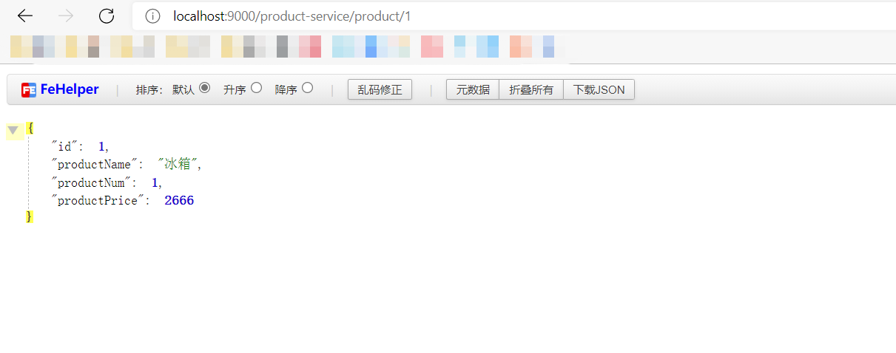
访问 http://localhost:9000/order-service/order/get/1 结果如下
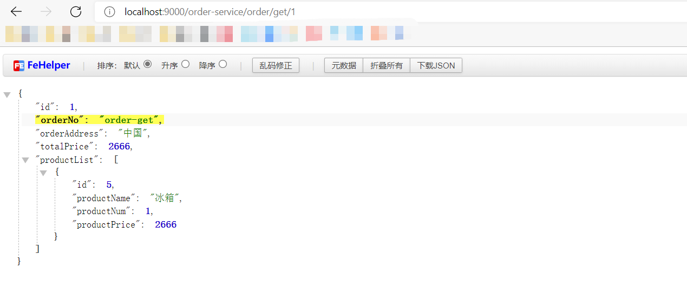
7.3.2 服务名称路由
微服务一般是由几十、上百个服务组成，对于 URL 地址路由的方式，如果对每个服务实例手动指定一个唯一访问地址，这样做显然是不合理的。
Zuul 支持与 Eureka 整合开发，根据 serviceId 自动从注册中心获取服务地址并转发请求，这样做的好处不仅可以通过单个端点来访问应用的所有服务，而且在添加或移除服务实例时不用修改 Zuul 的路由配置。
添加Eureka Client依赖
1 | <!-- netflix eureka client 依赖 --> |
配置注册中心和路由规则
1 | # 路由规则 |
启动类
1 | package com.springcloud.demo; |
访问测试
启动服务之后，注册中心如下：
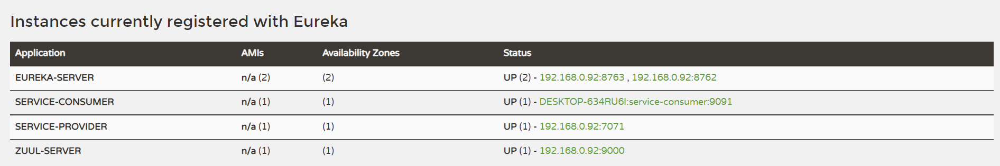
访问测试：
访问 http://localhost:9000/product-service/product/1 结果如下
访问 http://localhost:9000/order-service/order/get/1 结果如下
7.3.3 简化路由配置
Zuul 为了方便大家使用，提供了默认路由配置：路由 id 和 微服务名称 一致，path 默认对应 /微服务名称/**，所以以下配置就没必要再写了。
注释路由配置
1 | # 路由规则 |
访问测试
http://localhost:9000/service-provider/product/1
http://localhost:9000/service-consumer/order/get/1
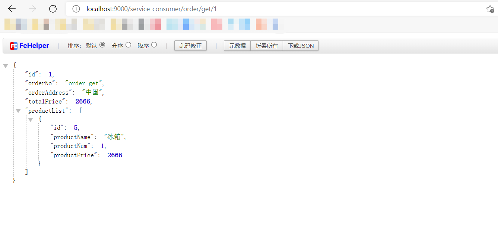
7.4 路由排除
我们可以通过路由排除设置不允许被访问的资源。允许被访问的资源可以通过路由规则进行设置。
7.4.1 URL 地址排除
application.yaml
1 | # 路由规则 |
7.4.2 服务名称排除
application.yml
1 | # 路由规则 |
7.5 路由前缀
application.yml
1 | zuul: |
访问 http://localhost:9000/api/service-provider/product/1 测试，结果如下：
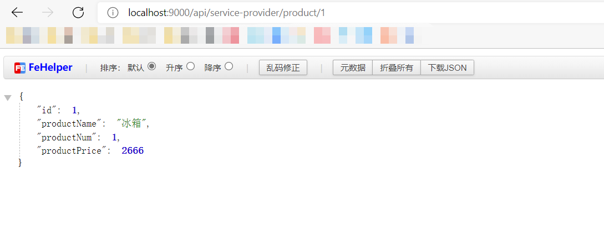
8. 网关过滤器

Zuul 包含了对请求的路由和过滤两个核心功能，其中路由功能负责将外部请求转发到具体的微服务实例上，是实现外部访问统一入口的基础；而过滤器功能则负责对请求的处理过程进行干预，是实现请求校验，服务聚合等功能的基础。然而实际上，路由功能在真正运行时，它的路由映射和请求转发都是由几个不同的过滤器完成的。
路由映射主要通过 pre 类型的过滤器完成，它将请求路径与配置的路由规则进行匹配，以找到需要转发的目标地址；而请求转发的部分则是由 routing 类型的过滤器来完成，对 pre 类型过滤器获得的路由地址进行转发。所以说，过滤器可以说是 Zuul 实现 API 网关功能最核心的部件，每一个进入 Zuul 的 http 请求都会经过一系列的过滤器处理链得到请求响应并返回给客户端。
8.1 过滤器概述
Zuul 的中心是一系列过滤器，能够在 HTTP 请求和响应的路由过程中执行一系列操作。
以下是 Zuul 过滤器的主要特征：
- 类型：定义路由流程中应用过滤器的阶段。共
pre、routing、post、error4 个类型。 - 执行顺序： 在同类型中，定义过滤器执行的顺序。比如多个 pre 类型的执行顺序。
- 标准：执行过滤器所需的条件。true 开启，false 关闭。
- 行动：如果符合条件，将执行的动作。具体操作。
8.2 过滤器类型
PRE：请求被路由到源服务器之前执行的过滤器 - 身份认证
- 选路由
- 请求日志
ROUTING：处理将请求发送到源服务器的过滤器
POST：响应从源服务器返回时执行的过滤器
- 对响应增加 HTTP 头
- 收集统计和度量指标
- 将响应以流的方式发送回客户端
ERROR：上述阶段中出现错误时执行的过滤器
8.3 创建过滤器
Spring Cloud Netflix Zuul 中实现过滤器必须包含 4 个基本特征：过滤器类型，执行顺序，执行条件，动作（具体操作）。这些步骤都是 ZuulFilter 接口中定义的 4 个抽象方法:
1 | package com.springcloud.demo.component; |
访问测试
访问 http://localhost:9000/api/product-service/product/1 控制台输出如下：
1 | 2021-10-09 21:23:43.031 INFO 10624 --- [nio-9000-exec-2] c.springcloud.demo.filter.CustomFilter : CustomFilter...method=GET, url=http://localhost:9000/api/product-service/product/1 |
8.4 统一鉴权
接下来我们在网关过滤器中通过 token 判断用户是否登录，完成一个统一鉴权案例。
1 | package com.springcloud.demo.filter; |
访问测试
访问 http://localhost:9000/api/product-service/product/1, 结果如下：
访问 http://localhost:9000/api/product-service/product/1?token=123 ，结果如下：
9. Zuul的生命周期

- HTTP 发送请求到 Zuul 网关
- Zuul 网关首先经过 pre filter
- 验证通过后进入 routing filter，接着将请求转发给远程服务，远程服务执行完返回结果，如果出错，则执行 error filter
- 继续往下执行 post filter
- 最后返回响应给 HTTP 客户端
10. 网关过滤器异常统一处理
10.1 创建异常过滤器
1 | package com.springcloud.demo.filter; |
10.2 模拟异常
在 pre 过滤器中添加模拟异常代码。
10.3 禁用默认的异常处理器
禁用 Zuul 默认的异常处理 filter：SendErrorFilter
1 | zuul: |
10.4 访问测试
访问http://localhost:9000/api/product-service/product/1?token=123
结果如下
11. Zuul 和 Hystrix 无缝结合
在 Spring Cloud 中，Zuul 启动器中包含了 Hystrix 相关依赖，在 Zuul 网关工程中，默认是提供了 Hystrix Dashboard 服务监控数据的(hystrix.stream)，但是不会提供监控面板的界面展示。在 Spring Cloud 中，Zuul 和 Hystrix 是无缝结合的，我们可以非常方便的实现网关容错处理。
11.1 网关监控
Zuul 的依赖中包含了 Hystrix 的相关 jar 包，所以我们不需要在项目中额外添加 Hystrix 的依赖。
但是需要开启数据监控的项目中要添加 dashboard 依赖。
配置文件
1 | # 度量指标监控与健康检查 |
启动类
1 |
|
访问并查看数据
访问：http://localhost:9000/hystrix 监控中心界面如下：
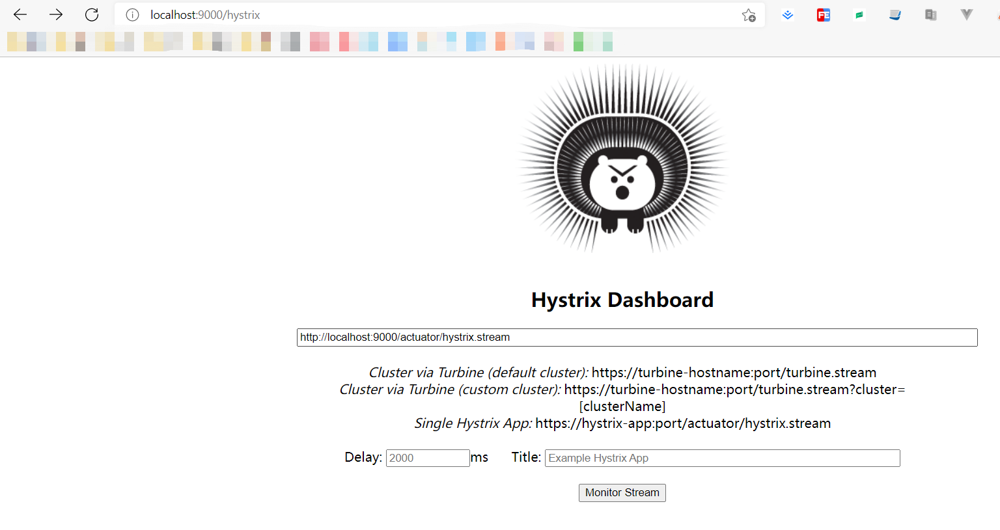
请求多次http://localhost:9000/api/product-service/product/1?token=123，结果如下
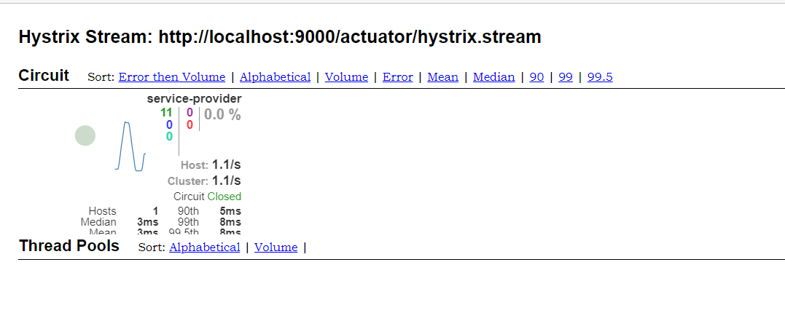
11.2 网关熔断
在 Edgware 版本之前，Zuul 提供了接口 ZuulFallbackProvider 用于实现 fallback 处理。从 Edgware 版本开始，Zuul 提供了接口 FallbackProvider 来提供 fallback 处理。
Zuul 的 fallback 容错处理逻辑，只针对 timeout 异常处理，当请求被 Zuul 路由后，只要服务有返回（包括异常），都不会触发 Zuul 的 fallback 容错逻辑。
代码示例
1 | package com.springcloud.demo.fallback; |
访问测试
访问 http://localhost:9000/api/product-service/product/1?token=123 结果如下：
11.3 网关限流
顾名思义，限流就是限制流量，就像你宽带包有 1 个 G 的流量，用完了就没了。通过限流，我们可以很好地控制系统的 QPS，从而达到保护系统的目的。Zuul 网关组件也提供了限流保护。当请求并发达到阀值，自动触发限流保护，返回错误结果。只要提供 error 错误处理机制即可。
为什么需要限流
比如 Web 服务、对外 API，这种类型的服务有以下几种可能导致机器被拖垮：
- 用户增长过快（好事）
- 因为某个热点事件（微博热搜）
- 竞争对象爬虫
- 恶意的请求
这些情况都是无法预知的，不知道什么时候会有 10 倍甚至 20 倍的流量打进来，如果真碰上这种情况，扩容是根本来不及的。
从上图可以看出，对内而言：上游的 A、B 服务直接依赖了下游的基础服务 C，对于 A，B 服务都依赖的基础服务 C 这种场景，服务 A 和 B 其实处于某种竞争关系，如果服务 A 的并发阈值设置过大，当流量高峰期来临，有可能直接拖垮基础服务 C 并影响服务 B，即雪崩效应。
限流算法
常见的限流算法有：
- 计数器算法
- 漏桶（Leaky Bucket）算法
- 令牌桶（Token Bucket）算法
计数器算法
计数器算法是限流算法里最简单也是最容易实现的一种算法。比如我们规定，对于 A 接口来说，我们 1 分钟的访问次数不能超过 100 个。那么我们可以这么做：在一开始的时候，我们可以设置一个计数器 counter，每当一个请求过来的时候，counter 就加 1，如果 counter 的值大于 100 并且该请求与第一个请求的间隔时间还在 1 分钟之内，触发限流；如果该请求与第一个请求的间隔时间大于 1 分钟，重置 counter 重新计数，具体算法的示意图如下：
这个算法虽然简单，但是有一个十分致命的问题，那就是临界问题，我们看下图：
从上图中我们可以看到，假设有一个恶意用户，他在 0:59 时，瞬间发送了 100 个请求，并且 1:00 又瞬间发送了 100 个请求，那么其实这个用户在 1 秒里面，瞬间发送了 200 个请求。我们刚才规定的是 1 分钟最多 100 个请求，也就是每秒钟最多 1.7 个请求，用户通过在时间窗口的重置节点处突发请求， 可以瞬间超过我们的速率限制。用户有可能通过算法的这个漏洞，瞬间压垮我们的应用。
还有资料浪费的问题存在，我们的预期想法是希望 100 个请求可以均匀分散在这一分钟内，假设 30s 以内我们就请求上限了，那么剩余的半分钟服务器就会处于闲置状态，比如下图：
漏桶算法
漏桶算法其实也很简单，可以粗略的认为就是注水漏水的过程，往桶中以任意速率流入水，以一定速率流出水，当水超过桶流量则丢弃，因为桶容量是不变的，保证了整体的速率。
漏桶算法是使用队列机制实现的。
漏桶算法主要用途在于保护它人（服务），假设入水量很大，而出水量较慢，则会造成网关的资源堆积可能导致网关瘫痪。而目标服务可能是可以处理大量请求的，但是漏桶算法出水量缓慢反而造成服务那边的资源浪费。
漏桶算法无法应对突发调用。不管上面流量多大，下面流出的速度始终保持不变。因为处理的速度是固定的，请求进来的速度是未知的，可能突然进来很多请求，没来得及处理的请求就先放在桶里，既然是个桶，肯定是有容量上限，如果桶满了，那么新进来的请求就会丢弃。
令牌桶算法
令牌桶算法是对漏桶算法的一种改进，漏桶算法能够限制请求调用的速率，而令牌桶算法能够在限制调用的平均速率的同时还允许一定程度的突发调用。在令牌桶算法中，存在一个桶，用来存放固定数量的令牌。算法中存在一种机制，以一定的速率往桶中放令牌。每次请求调用需要先获取令牌，只有拿到令牌，才有机会继续执行，否则选择选择等待可用的令牌、或者直接拒绝。放令牌这个动作是持续不断的进行，如果桶中令牌数达到上限，就丢弃令牌。
场景大概是这样的：桶中一直有大量的可用令牌，这时进来的请求可以直接拿到令牌执行，比如设置 QPS 为 100/s，那么限流器初始化完成一秒后，桶中就已经有 100 个令牌了，等服务启动完成对外提供服务时，该限流器可以抵挡瞬时的 100 个请求。当桶中没有令牌时，请求会进行等待，最后相当于以一定的速率执行。
Zuul 内部使用 Ratelimit 组件实现限流，使用的就是该算法，大概描述如下：
- 所有的请求在处理之前都需要拿到一个可用的令牌才会被处理；
- 根据限流大小，设置按照一定的速率往桶里添加令牌；
- 桶设置最大的放置令牌限制，当桶满时、新添加的令牌就被丢弃或者拒绝；
- 请求到达后首先要获取令牌桶中的令牌，拿着令牌才可以进行其他的业务逻辑，处理完业务逻辑之后，将令牌直接删除；
- 令牌桶有最低限额，当桶中的令牌达到最低限额的时候，请求处理完之后将不会删除令牌，以此保证足够的限流。

漏桶算法主要用途在于保护它人，而令牌桶算法主要目的在于保护自己，将请求压力交由目标服务处理。假设突然进来很多请求，只要拿到令牌这些请求会瞬时被处理调用目标服务。添加依赖
Zuul 的限流保护需要额外依赖spring-cloud-zuul-ratelimit组件，限流数据采用Redis存储所以还要添加Redis组件。
RateLimit 官网文档
pom.xml
1 | <!-- spring cloud zuul ratelimit 依赖 --> |
全局限流配置
1 | server: |
Zuul-RateLimiter 基本配置项：
| 配置项 | 可选值 | 说明 |
|---|---|---|
| enabled | true/false | 是否启用限流 |
| repository | REDIS: 基于Redis，使用时必须引入Redis相关依赖 CONSUL: 基于Consul JPA: 基于SpringDataJPA，需要用到数据库 使用Java编写的基于令牌桶算法的限流库： BUCKET4J_JCACHE BUCKET4J_HAZELCAST BUCKET4J_IGNITE BUCKET4J_INFINISPAN | 限流数据的存储方式，无默认值必填项 |
| key-prefix | String | 限流 key 前缀 |
| default-policy-list | List of Policy | 默认策略 |
| policy-list | Map of Lists of Policy | 自定义策略 |
| post-filter-order | - | postFilter 过滤顺序 |
| pre-filter-order | - | preFilter 过滤顺序 |
Bucket4j 实现需要相关的 bean @Qualifier(“RateLimit”):
JCache - javax.cache.Cache
Hazelcast - com.hazelcast.core.IMap
Ignite - org.apache.ignite.IgniteCache
Infinispan - org.infinispan.functional.ReadWriteMap
Policy 限流策略配置项说明：
| 项 | 说明 |
|---|---|
| limit | 单位时间内请求次数限制 |
| quota | 单位时间内累计请求时间限制（秒），非必要参数 |
| refresh-interval | 单位时间（秒），默认 60 秒 |
| type | 限流方式： ORGIN: 访问IP限流 URL: 访问URL限流 USER: 特定用户或用户组限流（比如：非会员用户限制每分钟只允许下载一个文件） URL_PATTERN ROLE HTTP_METHOD |
访问测试 http://localhost:9000/api/product-service/product/1?token=123
结果如下
查看redis
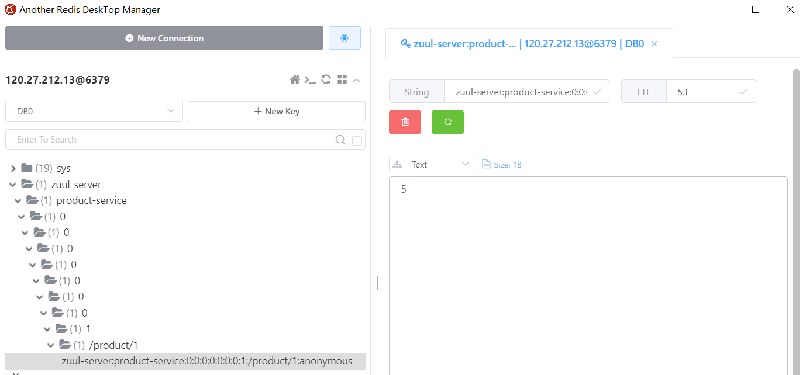
局部限流配置
使用局部限流配置，Zuul 仅针对配置的服务提供限流保护。
1 | # 路由规则 |
连续多次访问http://localhost:9000/api/order-service/order/get/1?token=123，结果如下：
1 | ErrorFilter...com.netflix.zuul.exception.ZuulException: 429 TOO_MANY_REQUESTS |
查看Redis
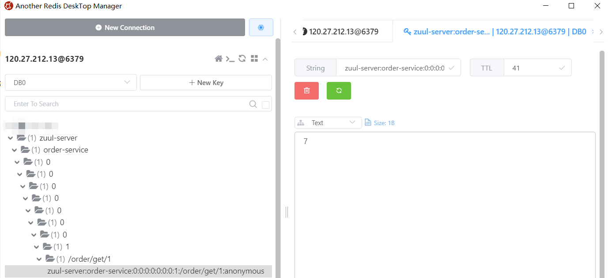
连续多次访问 http://localhost:9000/api/product-service/product/1?token=123 ，结果正常。
自定义限流配置
如果希望自己控制限流策略，可以通过自定义 RateLimitKeyGenerator 的实现来增加自己的策略逻辑。
修改商品服务控制层代码如下，添加 /product/single：
1 | /** |
自定义限流策略类。
1 | package com.springcloud.demo.ratelimit; |
application.yaml
1 | server: |
多次访问：http://localhost:9000/api/product-service/product/single/?token=123&id=1 被限流后，马上更换 id=2 重新访问发现服务任然可用，再继续多次访问，发现更换过的 id=2 也被限流了。
错误处理
配置 error 类型的网关过滤器进行处理即可。修改之前的 ErrorFilter 让其变的通用。
1 | package com.springcloud.demo.filter; |
还有一种方法是实现 org.springframework.boot.web.servlet.error.ErrorController 重写 getErrorPath() 本文中不做重点讲解。
多次访问 http://localhost:9000/api/product-service/product/single/?token=123&id=1 结果如下：
11.4 网关调优
使用 Zuul 的 Spring Cloud 微服务结构图：
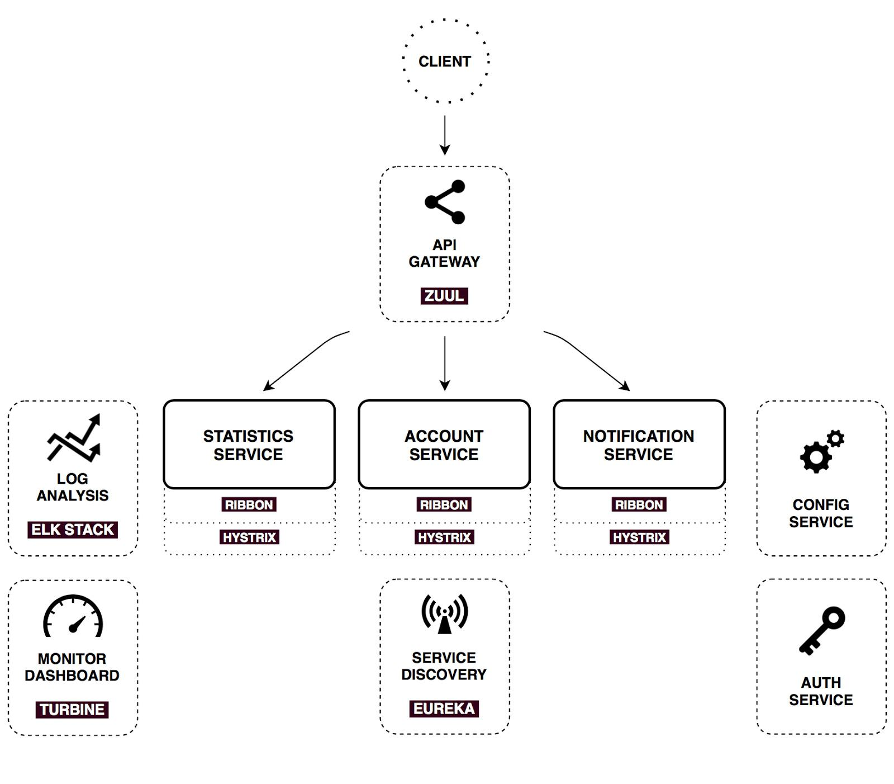
从上图中可以看出。整体请求逻辑还是比较复杂的，在没有 Zuul 网关的情况下，client 请求 service 的时候，也有请求超时的可能。那么当增加了 Zuul 网关的时候，请求超时的可能就更明显了。
当请求通过 Zuul 网关路由到服务，并等待服务返回响应，这个过程中 Zuul 也有超时控制。Zuul 的底层使用的是 Hystrix + Ribbon 来实现请求路由。
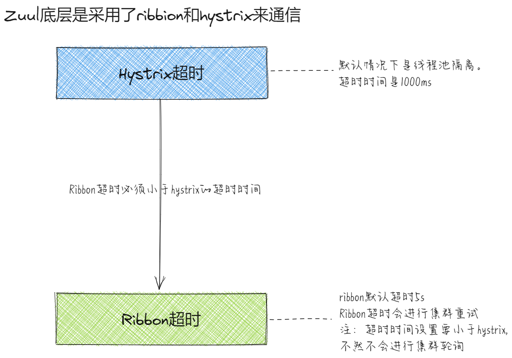Zuul 中的 Hystrix 内部使用线程池隔离机制提供请求路由实现，其默认的超时时长为 1000 毫秒。Ribbon 底层默认超时时长为 5000 毫秒。如果 Hystrix 超时，直接返回超时异常。如果 Ribbon 超时，同时 Hystrix 未超时，Ribbon 会自动进行服务集群轮询重试，直到 Hystrix 超时为止。如果 Hystrix 超时时长小于 Ribbon 超时时长，Ribbon 不会进行服务集群轮询重试。
配置文件
1 | zuul: |
添加依赖
Spring Cloud Netflix Zuul 网关重试机制需要使用 spring-retry 组件。
1 | <!-- spring retry 依赖 --> |
启动类
启动类需要开启 @EnableRetry 重试注解。
1 | package com.springcloud.demo; |
模拟超时
商品服务模拟超时。
1 | /** |
访问测试
配置前访问 http://localhost:9000/api/product-service/product/1?token=123
结果如下：
配置后访问 http://localhost:9000/api/product-service/product/1?token=123
结果如下：
12. Zuul 和 Sentinel 整合
Sentinel 支持对 Spring Cloud Gateway、Netflix Zuul 等主流的 API Gateway 进行限流。
官方文档
- https://github.com/alibaba/spring-cloud-alibaba/wiki/Sentinel
- https://github.com/alibaba/Sentinel/wiki/网关限流#zuul-1x
12.1 网关限流
创建项目
创建spring-cloud-demo-zuul-sentinel-server项目添加依赖
- 单独使用添加
sentinel-zuul-adapter依赖即可。 - 若想跟
Sentinel Starter配合使用，需要加上spring-cloud-alibaba-sentinel-gateway依赖，同时需要添加spring-cloud-starter-netflix-zuul依赖来让spring-cloud-alibaba-sentinel-gateway模块里的Zuul自动化配置类生效。 - 同时请将
spring.cloud.sentinel.filter.enabled配置项置为false（若在网关流控控制台上看到了 URL 资源，就是此配置项没有置为 false）。1
2
3
4
5
6
7
8
9
10
11
12
13
14
15
16
17
18
19
20
21
22
23
24
25
26
27
28
29
30
31
32
33
34
35
36
37
38
39
40
41
42
43
44
45
46
47
48
49
<project xmlns="http://maven.apache.org/POM/4.0.0"
xmlns:xsi="http://www.w3.org/2001/XMLSchema-instance"
xsi:schemaLocation="http://maven.apache.org/POM/4.0.0 http://maven.apache.org/xsd/maven-4.0.0.xsd">
<parent>
<artifactId>springcloud-demo</artifactId>
<groupId>com.springcloud.demo</groupId>
<version>0.0.1-SNAPSHOT</version>
</parent>
<modelVersion>4.0.0</modelVersion>
<artifactId>spring-cloud-demo-zuul-sentinel-server</artifactId>
<properties>
<maven.compiler.source>8</maven.compiler.source>
<maven.compiler.target>8</maven.compiler.target>
</properties>
<!-- 项目依赖 -->
<dependencies>
<!-- spring cloud netflix zuul 依赖 -->
<dependency>
<groupId>org.springframework.cloud</groupId>
<artifactId>spring-cloud-starter-netflix-zuul</artifactId>
</dependency>
<!-- netflix eureka client 依赖 -->
<dependency>
<groupId>org.springframework.cloud</groupId>
<artifactId>spring-cloud-starter-netflix-eureka-client</artifactId>
</dependency>
<!-- 单独使用 -->
<!-- sentinel zuul adapter 依赖 -->
<dependency>
<groupId>com.alibaba.csp</groupId>
<artifactId>sentinel-zuul-adapter</artifactId>
</dependency>
<!-- 和 Sentinel Starter 配合使用 -->
<!--
<dependency>
<groupId>com.alibaba.cloud</groupId>
<artifactId>spring-cloud-starter-alibaba-sentinel</artifactId>
</dependency>
<dependency>
<groupId>com.alibaba.cloud</groupId>
<artifactId>spring-cloud-alibaba-sentinel-gateway</artifactId>
</dependency>
-->
</dependencies>
</project>
配置文件
1 | server: |
网关服务配置类
配置网关服务过滤器和网关限流规则。
1 | package com.springcloud.demo.config; |
启动类
1 | package com.springcloud.demo; |
访问
多次访问：http://localhost:9001/service-consumer/order/1 触发限流后会返回固定的提示：
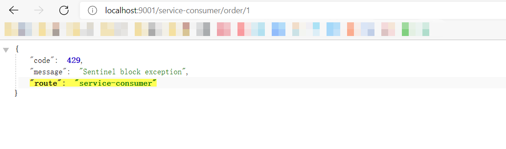
自定义限流
发生限流之后的处理流程 ：
- 发生限流之后可自定义返回参数，通过实现
ZuulBlockFallbackProvider接口，默认的实现是DefaultBlockFallbackProvider。 - 默认的
fallback route的规则是route ID或自定义的API分组名称。编写限流处理类
1
2
3
4
5
6
7
8
9
10
11
12
13
14
15
16
17
18
19
20
21
22
23
24package com.springcloud.demo.fallback;
import com.alibaba.csp.sentinel.adapter.gateway.zuul.fallback.BlockResponse;
import com.alibaba.csp.sentinel.adapter.gateway.zuul.fallback.ZuulBlockFallbackProvider;
import com.alibaba.csp.sentinel.slots.block.BlockException;
import lombok.extern.slf4j.Slf4j;
4j
public class OrderBlockFallbackProvider implements ZuulBlockFallbackProvider {
public String getRoute() {
return "service-consumer";
}
public BlockResponse fallbackResponse(String route, Throwable throwable) {
log.error("{} 服务触发限流", route);
if (throwable instanceof BlockException) {
return new BlockResponse(429, "服务访问压力过大，请稍后再试。", route);
} else {
return new BlockResponse(500, "系统错误，请联系管理员。", route);
}
}
}
将限流处理类注册至 Zuul 容器
ZuulConfig.java
1 | // Spring 容器初始化的时候执行该方法 |
多次访问 http://localhost:9001/service-consumer/order/1 触发限流后返回自定义提示：
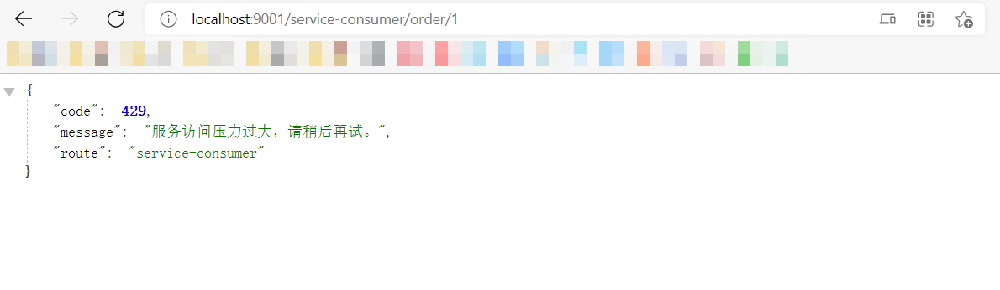
13. 高可用网关
业内通常用多少 9 来衡量网站的可用性，例如 QQ 的可用性是 4 个 9，就是说 QQ 能够保证在一年里，服务在 99.99% 的时间是可用的，只有 0.01% 的时间不可用，大约最多 53 分钟。
对于大多数网站，2 个 9 是基本可用；3 个 9 是叫高可用；4 个 9 是拥有自动恢复能力的高可用。
实现高可用的主要手段是数据的冗余备份和服务的失效转移，这两种手段具体可以怎么做呢，在网关里如何体现？主要有以下几个方向：

下载nginx
下载nginx(根据自己的需要下载对应的版本，这里下载Windows版本)
安装nginx
解压文件后直接运行根路径下的 nginx.exe 文件即可。
Nginx 默认端口为 80，访问：http://localhost:80/ 看到下图说明安装成功。
配置网管集群
进入 Nginx 的 conf 目录，打开 nginx.conf 文件，配置网关集群：
1 | http { |
访问
启动两台网关服务器 http://localhost:9000/，http://localhost:9001/ 和相关服务。
访问：http://localhost/api/product-service/product/1?token=123 实现高可用网关。
总结
一个请求过来，首先经过 Nginx 的一层负载，到达网关，然后由网关负载到真实后端，若后端有问题，网关会进行重试访问，多次访问后仍返回失败，可以通过熔断或服务降级立即返回结果。而且，由于是负载均衡，网关重试时不一定会访问到出错的后端。
参考资料：
Netflix Open Source Software Center
Zuul
Spring Cloud 系列之 Netflix Zuul 服务网关
到底什么是API网关？
深入浅出聊聊企业级API网关
谈API网关的背景、架构以及落地方案
一文带你了解什么是Zuul网关
微服务网关解决方案和使用总结